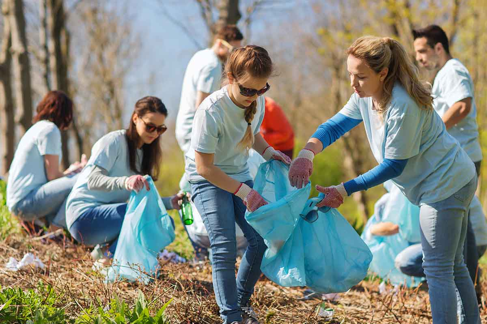

<main class="container">
    <div class="harmony-hub-paragraph">
        <h1>Previous Community Events</h1>
        <h3>Harmony Hub is dedicated to fostering a strong sense of community through various events and initiatives. Our aim is to bring people together, promote inclusivity, and make a positive impact on the neighborhoods we serve.</h3>
    </div>

    <!-- Gallery Images-->
    <!-- The following code was taken from https://www.youtube.com/watch?v=4gcy-qT9kGw -->
    <div class="grid-container">
        <div class="gallery">
            <a href="../../images/community-bbq.jpg" data-lightbox="events" data-title="Community BBQ - A gathering where residents come together to enjoy delicious food, music, and games, fostering bonds within the community.">
                <!-- The image below was taken from  https://www.google.ca/url?sa=i&url=https%3A%2F%2Fwww.uwkc.org%2Fevents-news%2Fkicking-off-our-first-annual-community-bbq-->
                
            </a>
            <a href="../../images/Heres-Why-Community-Service-Is-Important-Top-5-Benefits-2.jpg" data-lightbox="events" data-title="Community Service Event - Volunteers from Harmony Hub and the local community join hands to make a positive impact through various service projects, ranging from environmental cleanups to supporting local charities.">
                <!-- The image below was taken from https://habitatbroward.org/wp-content/uploads/2020/02/Heres-Why-Community-Service-Is-Important-Top-5-Benefits-2.jpg -->
                
            </a>
            <a href="../../images/16-astonishing-facts-about-community-service-1696309583.jpg" data-lightbox="events" data-title="Community Engagement Workshop - Residents participate in an interactive workshop aimed at empowering individuals to take an active role in shaping their community, discussing ideas, and finding solutions to common challenges.">
                <!-- The image below was taken from https://facts.net/wp-content/uploads/2023/10/16-astonishing-facts-about-community-service-1696309583.jpg -->
                
            </a>
            <a href="../../images/630d414568c7eac5f75e06a9_Community%20Services.jpg" data-lightbox="events" data-title="Community Services Expo - Harmony Hub organizes an expo showcasing various services available to the community, including health resources, educational programs, and support services, fostering connections and awareness.">
                <!-- The image below was taken from https://assets-global.website-files.com/6201db36115b8f3552296656/630d414568c7eac5f75e06a9_Community%20Services.jpg -->
                
            </a>
        </div>
    </div>
</main>